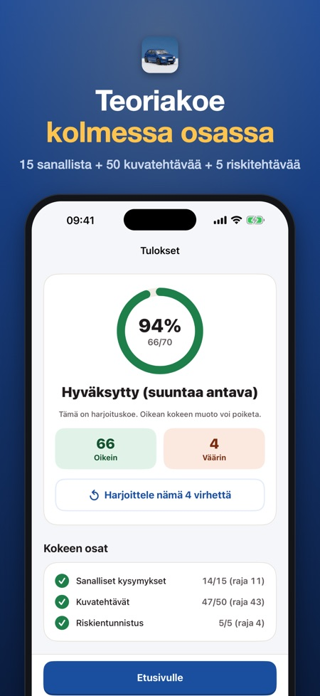
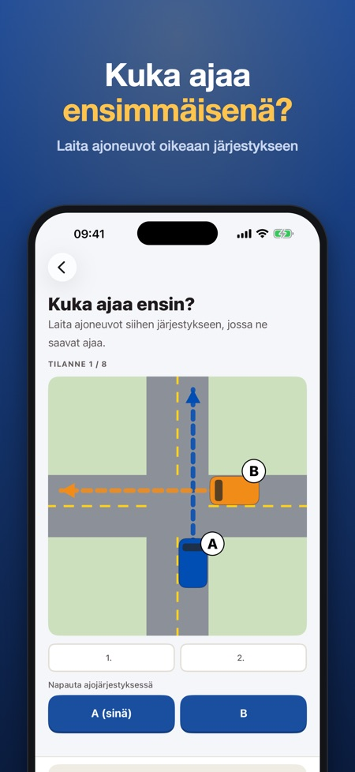
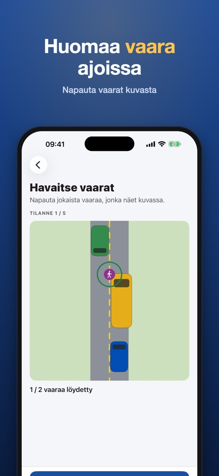

Harjoittele B-ajokortin teoriakoetta kolmiosaisessa muodossa: 15 sanallista, 50 kuvatehtävää ja 5 riskitehtävää. Jokaiseen kysymykseen on selitys ja lakiviite.



Sovelluksen täysi harjoituskoe noudattaa Traficomin teoriakoemääräyksen rakennetta: 15 sanallista kysymystä, 50 kuvatehtävää ja 5 riskitehtävää, aikaa 30 minuuttia.
Yli 300 kysymystä 12 aiheesta. Jokaiseen on selitys ja lakiviite.
Eivät ole. Kysymykset ja kuvat ovat sovelluksen omia ja perustuvat tieliikennelakiin 729/2018, joten tulos on suuntaa antava. Sovellus ei liity Traficomiin tai muihin viranomaisiin.
Kyllä, kysymykset ovat suomeksi ja ruotsiksi. Selitykset voit lukea suomeksi, ruotsiksi tai englanniksi.
Kyllä, sovellus toimii ilman verkkoyhteyttä. Tiliä ei tarvita.
Täysi versio avataan yhdellä ostolla. Tilausta ei ole.
Kyllä. Liikennemerkit, etuajo-oikeus, merkkihakemisto, risteys- ja vaaraharjoitukset, lyhyt harjoituskoe ja yksi täysi harjoituskoe ovat käytössä ilman ostoa.
Valmistaudu B-ajokortin teoriakokeeseen Traficomin mallin mukaan: 15 sanallista kysymystä, 50 kuvatehtävää ja 5 riskitehtävää, 30 minuuttia. Yli 300 kysymystä 12 aiheesta, jokaiseen selitys ja lakiviite. Maksa kerran, ei tilausta.
MITÄ SOVELLUKSESSA ON
• Liikennemerkit ja merkkien tunnistus, etuajo-oikeus ja risteykset, liikennevalot ja tiemerkinnät, nopeus ja ohittaminen, jalankulkijat, pyöräilijät ja raitiovaunut, pysäköinti, talviajo ja hirvieläimet, ajoneuvo ja turvalaitteet, kuljettajan kunto ja ensiapu, taloudellinen ajo sekä vaaranhavaitseminen
• Kuvakysymyksiä: liikennemerkit ja risteystilanteet ylhäältä katsottuna – kuka ajaa ensin?
• Risteysharjoitus: laita ajoneuvot siihen järjestykseen, jossa ne saavat ajaa
• Vaaratilanteet kuvina: napauta jokaista vaaraa, jonka näet
• Vaaranhavaitsemisen kysymykset: mikä tilanteessa on suurin vaara?
• Liikennemerkkien hakemisto: 46 yleistä merkkiä nimineen ja merkityksineen, haku nimellä tai koodilla
• Lyhyt harjoituskoe (10 kysymystä) ja täysi harjoituskoe virallisen mallin mukaan (15 + 50 + 5 tehtävää, 30 minuuttia) ajastettuina
• Virheet palaavat kerrattaviksi, kunnes osaat ne kaksi kertaa peräkkäin
• Päivän tavoite ja putki pitävät harjoittelun käynnissä
KYSYMYKSET SUOMEKSI TAI RUOTSIKSI
Teoriakokeen voi suorittaa suomeksi tai ruotsiksi, joten kysymykset ovat molemmilla kielillä. Selitykset voit lukea suomeksi, ruotsiksi tai englanniksi.
REILU HINTA
Kokeile liikennemerkkejä, etuajo-oikeutta, merkkihakemistoa, risteys- ja vaaraharjoituksia lyhyttä harjoituskoetta sekä yhtä täyttä harjoituskoetta ilman ostoa (lukittujen aiheiden selitykset kuuluvat täyteen versioon). Avaa kaikki yhdellä ostolla. Ei tilausta, ei mainoksia, ei tiliä. Toimii ilman verkkoyhteyttä.
Sovellus on itsenäinen eikä liity Traficomiin, Ajovarmaan tai muihin viranomaisiin. Kysymykset ovat omiamme ja perustuvat tieliikennelakiin 729/2018; ne eivät ole virallisia koekysymyksiä. Liikennemerkit on piirretty itse. Täyden harjoituskokeen rakenne (osat, tehtävämäärät, rajat ja aika) noudattaa Traficomin teoriakoemääräystä, mutta kysymykset ja kuvat ovat omiamme, joten tulos on suuntaa antava.